Relations between DCT_I and DST_I
Contents
Definitions
Result of transform is y=x*T, where y, x are row-vectors T is transform matrix
DCT_I matrix definition
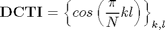
N=8; DCT1=cos(pi/N*(0:N)'*(0:N))
DCT1 =
Columns 1 through 8
1.0000 1.0000 1.0000 1.0000 1.0000 1.0000 1.0000 1.0000
1.0000 0.9239 0.7071 0.3827 0.0000 -0.3827 -0.7071 -0.9239
1.0000 0.7071 0.0000 -0.7071 -1.0000 -0.7071 -0.0000 0.7071
1.0000 0.3827 -0.7071 -0.9239 -0.0000 0.9239 0.7071 -0.3827
1.0000 0.0000 -1.0000 -0.0000 1.0000 0.0000 -1.0000 -0.0000
1.0000 -0.3827 -0.7071 0.9239 0.0000 -0.9239 0.7071 0.3827
1.0000 -0.7071 -0.0000 0.7071 -1.0000 0.7071 0.0000 -0.7071
1.0000 -0.9239 0.7071 -0.3827 -0.0000 0.3827 -0.7071 0.9239
1.0000 -1.0000 1.0000 -1.0000 1.0000 -1.0000 1.0000 -1.0000
Column 9
1.0000
-1.0000
1.0000
-1.0000
1.0000
-1.0000
1.0000
-1.0000
1.0000
DST_I matrix definition
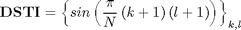
DST1=sin(pi/N*((0:N-2)+1)'*((0:N-2)+1))
DST1 =
0.3827 0.7071 0.9239 1.0000 0.9239 0.7071 0.3827
0.7071 1.0000 0.7071 0.0000 -0.7071 -1.0000 -0.7071
0.9239 0.7071 -0.3827 -1.0000 -0.3827 0.7071 0.9239
1.0000 0.0000 -1.0000 -0.0000 1.0000 0.0000 -1.0000
0.9239 -0.7071 -0.3827 1.0000 -0.3827 -0.7071 0.9239
0.7071 -1.0000 0.7071 0.0000 -0.7071 1.0000 -0.7071
0.3827 -0.7071 0.9239 -1.0000 0.9239 -0.7071 0.3827
Finding relations
From [1] we know that DCTI matrix can be expressed in terms of Tschebyshev polynomials
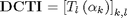
where
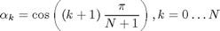
are roots of polynomial
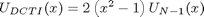
DSTI matrix can be analogously expressed as
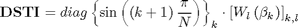
where
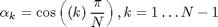
are roots of polynomial
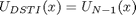
Because there exist relation
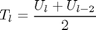
and
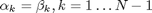
we can express DCTI through DSTI
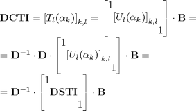
where
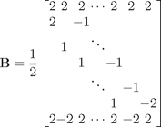
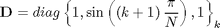
B=diag(ones(1,N+1))-diag(ones(1,N-1),2); B=B(1:end-2,:); B(1,1)=2; B(end,end)=-2; B=[ones(1,N+1);B/2;(-1).^(0:N)]; D=diag([1, sin(pi/N*((0:N-2)+1)), 1]);
Check expression of DCT_I through DST_I
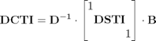
DST1a=eye(N+1);DST1a(2:end-1,2:end-1)=DST1; inv(D)*DST1a*B
ans =
Columns 1 through 8
1.0000 1.0000 1.0000 1.0000 1.0000 1.0000 1.0000 1.0000
1.0000 0.9239 0.7071 0.3827 0 -0.3827 -0.7071 -0.9239
1.0000 0.7071 0.0000 -0.7071 -1.0000 -0.7071 -0.0000 0.7071
1.0000 0.3827 -0.7071 -0.9239 -0.0000 0.9239 0.7071 -0.3827
1.0000 0.0000 -1.0000 -0.0000 1.0000 0.0000 -1.0000 -0.0000
1.0000 -0.3827 -0.7071 0.9239 0.0000 -0.9239 0.7071 0.3827
1.0000 -0.7071 -0.0000 0.7071 -1.0000 0.7071 0.0000 -0.7071
1.0000 -0.9239 0.7071 -0.3827 -0.0000 0.3827 -0.7071 0.9239
1.0000 -1.0000 1.0000 -1.0000 1.0000 -1.0000 1.0000 -1.0000
Column 9
1.0000
-1.0000
1.0000
-1.0000
1.0000
-1.0000
1.0000
-1.0000
1.0000
Check computation of DCT_I transform
x=randn(1,N+1) y=x*DCT1 % true result y1=x*inv(D)*DST1a*B % compute DCTI using DSTI transform
x =
Columns 1 through 8
-1.2090 -0.7826 -0.7673 -0.1072 -0.9771 -0.9640 -2.3792 -0.8382
Column 9
0.2573
y =
Columns 1 through 8
-7.7672 0.0526 -0.3632 -3.3764 1.2178 -1.8358 0.4141 -0.7058
Column 9
-2.3832
y1 =
Columns 1 through 8
-7.7672 0.0526 -0.3632 -3.3764 1.2178 -1.8358 0.4141 -0.7058
Column 9
-2.3832
Check expression of DST_I through DCT_I
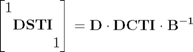
D*DCT1*inv(B)
ans =
Columns 1 through 8
1.0000 0 0 -0.0000 0 0 0 0
0.0000 0.3827 0.7071 0.9239 1.0000 0.9239 0.7071 0.3827
-0.0000 0.7071 1.0000 0.7071 0.0000 -0.7071 -1.0000 -0.7071
-0.0000 0.9239 0.7071 -0.3827 -1.0000 -0.3827 0.7071 0.9239
-0.0000 1.0000 0.0000 -1.0000 0 1.0000 0.0000 -1.0000
-0.0000 0.9239 -0.7071 -0.3827 1.0000 -0.3827 -0.7071 0.9239
-0.0000 0.7071 -1.0000 0.7071 0.0000 -0.7071 1.0000 -0.7071
0.0000 0.3827 -0.7071 0.9239 -1.0000 0.9239 -0.7071 0.3827
0 0 0 -0.0000 0 0 0 0
Column 9
0
0.0000
0.0000
0.0000
0.0000
-0.0000
0.0000
-0.0000
1.0000
Check computation of DCTII transform
x=randn(1,N-1) y=x*DST1 % true result y1=[0 x 0]*D*DCT1*inv(B) % compute DSTI using DCTI transform
x =
-0.1838 -0.1676 -0.1170 0.1685 -0.5012 -0.7051 0.5082
y =
-0.8956 0.3198 -0.2494 -1.0762 1.3218 -0.7551 0.0016
y1 =
Columns 1 through 8
0.0000 -0.8956 0.3198 -0.2494 -1.0762 1.3218 -0.7551 0.0016
Column 9
-0.0000
Reference
[1] Markus Pueschel, Jose M.F. Moura. The Algebraic Approach to the Discrete Cosine and Sine Transforms and their Fast Algorithms SIAM Journal of Computing 2003, Vol. 32, No. 5, pp. 1280-1316.